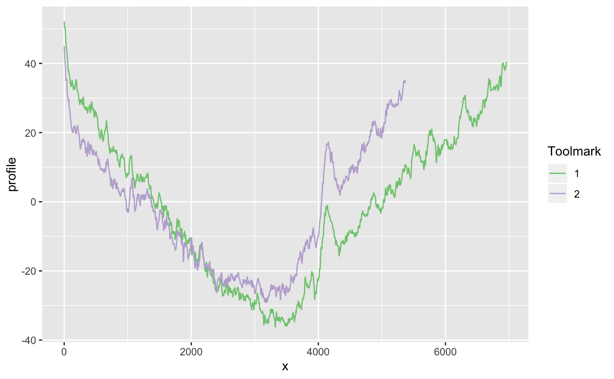

Were two striation marks made by the same tool or by different tools?
The R package toolmaRk provides a range of statistical tests for that.

toolmaRk is available from CRAN:
The development version of toolmaRk is available from Github:
Getting Started
Load the library
Load a dataset
The ameslab dataset provided with the package is data collected by Prof. Scott Chumbley, Mr. Stephen Davis, Ms. Taylor Grieve, Mr. Ryan Spotts, and Dr. Jeremy Hadler (Ames Laboratory, US DoE, Contract No. DE-Ac02-07CH11358). The data consists of 16 profiles from 7 different tool (T2, T4, T6, T7, T9, T10, and T11). Profiles from the same tool are considered to be same-source, profiles from different tools are different-source marks.
A first look at toolmark profiles
library(tidyverse)
library(tidyr)
ameslab$id <- 1:nrow(ameslab)
ameslab <- ameslab %>%
mutate(
data = profile %>% purrr::map(.f = function(x) {
names(x) <- "profile"
x$x <- 1:nrow(x)
x
}))
ameslab_long <- ameslab %>% unnest(data)
ameslab_long %>%
filter(ID=="T10", side == "A", angle==50) %>%
ggplot(aes(x = x, y = profile)) +
geom_line(aes(colour = factor(id))) +
scale_colour_brewer(name="Toolmark", type="qual")
The profiles of the two tools look very similar. We can now test for same-sourceness.
Testing same-sourceness
The tests in toolmaRk are set up using the null hypothesis of different source, i.e. the basic assumption is that two profiles were made by different tools. The alternative hypothesis is therefore ‘same tool’.
non-random Chumbley
Using a non-random Chumbley U statistic (Hadler and Morris, 2017), we find strong evidence against different source:
chumbley_non_random(
data.frame(ameslab$profile[[1]][1:2000,]),
data.frame(ameslab$profile[[2]][1:2000,]))## $same_shift_n
## [1] 28
##
## $diff_shift_n
## [1] 24
##
## $U
## [1] 3.340715
##
## $p_value
## [1] 0.0004178146The p-value of 0.0004 is very indicative of rejecting different-source (null hypothesis) in favor of same-source (alternative hypothesis).
Distance/threshold test for toolmarks
Both the distance and the threshold test for toolmarks (Hadler 2016) provide similar evidence:
res11 <- fixed_width_no_modeling(
data.frame(ameslab$profile[[1]][1:1250,]),
data.frame(ameslab$profile[[1]][1:1250,]), M = 200)
res11$dist_pval## [1] 0.0025## [1] 0.0025The p-values again indicate to reject the null hypothesis of same-sourceness in favor of the alternative of different sourceness.
References
- Hadler J. R. and Morris M.D., An Improved Version of a Tool Mark Comparison Algorithm. J Forensic Sci, 2017, vol. 63 (3), 2 pp. 849-855. http://doi.wiley.com/10.1111/1556-4029.13640
- Hadler, J. R., Forensic tool mark comparisons: Tests for the null hypothesis of different sources, Graduate Theses and Dissertations, Iowa State University, 2017, https://lib.dr.iastate.edu/etd/15312/